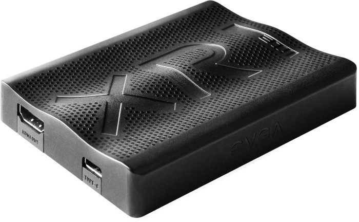
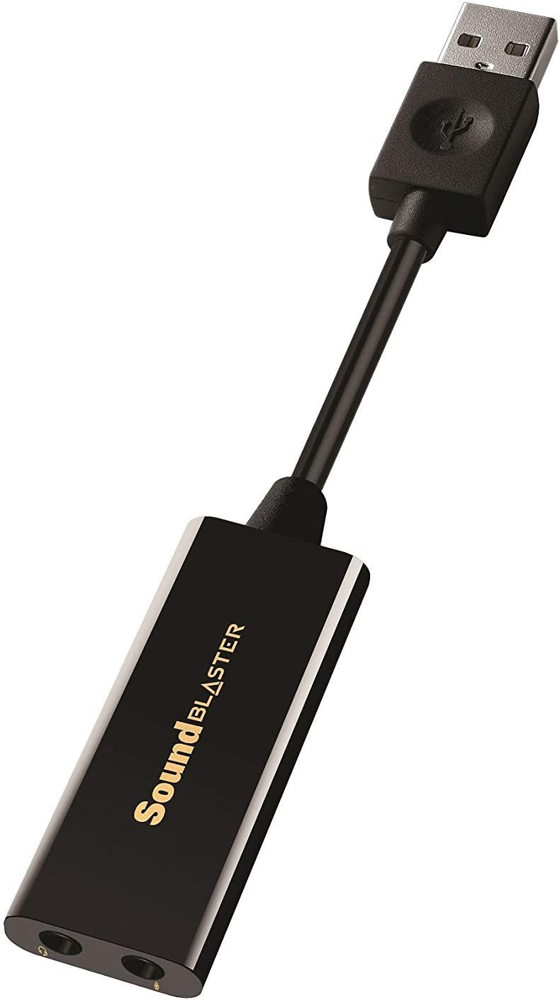
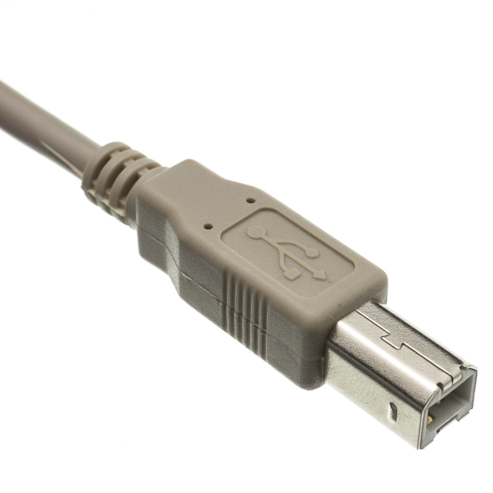

Camera
There are 2 camera. They are named as Camera 1, Camera 2.
Equipment
Setup the connections as provided below
Capture Cards + Others
| USB of both capture card (U) | --> | Multi-USB hub - USB Port |
| HDMI of both capture card (H) | --> | HDMI cable each |
| Multi-USB hub | --> | Power Supply |
| SoundBlaster | --> | Multi-USB hub - USB Port |
| 3.5mm (AUX cable) | --> | SoundBlaster - Mic jack |
| Printer cable | --> | Multi-USB port - next to power port |
| USB A side of printer cable | --> | The USB extender |
| USB extender | --> | Power Supply |
| USB extender - Male USB A | --> | LiveStream laptop |
Camera 1
| Facing | - | Stage | |
| HDMI (H) | - | Capture Card - Camera 1 | |
| Power (P) | - | USB C + Charger | |
| 3.5mm mic (M) | - | Other side of 3.5 mm cable | red color - left side top |
Camera 2
| Facing | - | Guests/Entrance |
| HDMI (H) | - | Capture Card - Camera 1 |
| Power (P) | - | Proprietary Pin |
Once connections are done
- Turn on the power of the cameras.
Glossary
Capture Card

Sound Blaster

Printer Cable
